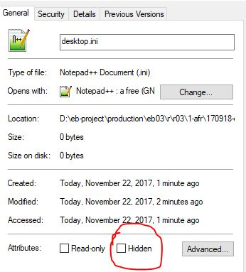

Create an OCR-Project Folder
How to create and manage the OCR-Project folder.
Figure: OCR-Project folder showing hidden files

- Begin with a collection of all the images in the section. These are in the production/images folder, in accordance with the folder structure spelled out in Images Folder.
- In AFR, select , or use the button on the Main toolbar. This creates an empty project.
- Add your image collection to the OCR-Project by clicking . In the dialogue box that opens, navigate to your image collection, select all images, and click Open. The images will be added to the project (or appended to the end if you have an existing one open), and their copies will be saved in the OCR-Project folder.
-
Use to save it with the appropriate filename to the
1-afr-project folder.

-
Close AFR and open the project folder in Windows File Explorer. Change the view
options to show all hidden files. Right-click on
FRBatch.pac, desktop.ini, and
packet.ico, select Properties,
and change the file attribute by unchecking hidden.
